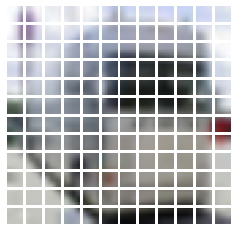
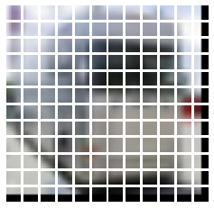
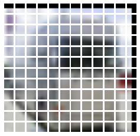
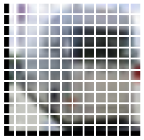
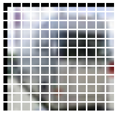

Train a Vision Transformer on small datasets
Author: Aritra Roy Gosthipaty
Date created: 2022/01/07
Last modified: 2024/11/27
Description: Training a ViT from scratch on smaller datasets with shifted patch tokenization and locality self-attention.

Introduction
In the academic paper An Image is Worth 16x16 Words: Transformers for Image Recognition at Scale, the authors mention that Vision Transformers (ViT) are data-hungry. Therefore, pretraining a ViT on a large-sized dataset like JFT300M and fine-tuning it on medium-sized datasets (like ImageNet) is the only way to beat state-of-the-art Convolutional Neural Network models.
The self-attention layer of ViT lacks locality inductive bias (the notion that image pixels are locally correlated and that their correlation maps are translation-invariant). This is the reason why ViTs need more data. On the other hand, CNNs look at images through spatial sliding windows, which helps them get better results with smaller datasets.
In the academic paper Vision Transformer for Small-Size Datasets, the authors set out to tackle the problem of locality inductive bias in ViTs.
The main ideas are:
- Shifted Patch Tokenization
- Locality Self Attention
This example implements the ideas of the paper. A large part of this example is inspired from Image classification with Vision Transformer.
Note: This example requires TensorFlow 2.6 or higher.
Setup
import math
import numpy as np
import keras
from keras import ops
from keras import layers
import tensorflow as tf
import matplotlib.pyplot as plt
# Setting seed for reproducibiltiy
SEED = 42
keras.utils.set_random_seed(SEED)
Prepare the data
NUM_CLASSES = 100
INPUT_SHAPE = (32, 32, 3)
(x_train, y_train), (x_test, y_test) = keras.datasets.cifar100.load_data()
print(f"x_train shape: {x_train.shape} - y_train shape: {y_train.shape}")
print(f"x_test shape: {x_test.shape} - y_test shape: {y_test.shape}")
Downloading data from https://www.cs.toronto.edu/~kriz/cifar-100-python.tar.gz
169009152/169001437 [==============================] - 16s 0us/step
169017344/169001437 [==============================] - 16s 0us/step
x_train shape: (50000, 32, 32, 3) - y_train shape: (50000, 1)
x_test shape: (10000, 32, 32, 3) - y_test shape: (10000, 1)
Configure the hyperparameters
The hyperparameters are different from the paper. Feel free to tune the hyperparameters yourself.
# DATA
BUFFER_SIZE = 512
BATCH_SIZE = 256
# AUGMENTATION
IMAGE_SIZE = 72
PATCH_SIZE = 6
NUM_PATCHES = (IMAGE_SIZE // PATCH_SIZE) ** 2
# OPTIMIZER
LEARNING_RATE = 0.001
WEIGHT_DECAY = 0.0001
# TRAINING
EPOCHS = 50
# ARCHITECTURE
LAYER_NORM_EPS = 1e-6
TRANSFORMER_LAYERS = 8
PROJECTION_DIM = 64
NUM_HEADS = 4
TRANSFORMER_UNITS = [
PROJECTION_DIM * 2,
PROJECTION_DIM,
]
MLP_HEAD_UNITS = [2048, 1024]
Use data augmentation
A snippet from the paper:
"According to DeiT, various techniques are required to effectively train ViTs. Thus, we applied data augmentations such as CutMix, Mixup, Auto Augment, Repeated Augment to all models."
In this example, we will focus solely on the novelty of the approach and not on reproducing the paper results. For this reason, we don't use the mentioned data augmentation schemes. Please feel free to add to or remove from the augmentation pipeline.
data_augmentation = keras.Sequential(
[
layers.Normalization(),
layers.Resizing(IMAGE_SIZE, IMAGE_SIZE),
layers.RandomFlip("horizontal"),
layers.RandomRotation(factor=0.02),
layers.RandomZoom(height_factor=0.2, width_factor=0.2),
],
name="data_augmentation",
)
# Compute the mean and the variance of the training data for normalization.
data_augmentation.layers[0].adapt(x_train)
Implement Shifted Patch Tokenization
In a ViT pipeline, the input images are divided into patches that are then linearly projected into tokens. Shifted patch tokenization (STP) is introduced to combat the low receptive field of ViTs. The steps for Shifted Patch Tokenization are as follows:
- Start with an image.
- Shift the image in diagonal directions.
- Concat the diagonally shifted images with the original image.
- Extract patches of the concatenated images.
- Flatten the spatial dimension of all patches.
- Layer normalize the flattened patches and then project it.
 |
|---|
| Shifted Patch Tokenization Source |
class ShiftedPatchTokenization(layers.Layer):
def __init__(
self,
image_size=IMAGE_SIZE,
patch_size=PATCH_SIZE,
num_patches=NUM_PATCHES,
projection_dim=PROJECTION_DIM,
vanilla=False,
**kwargs,
):
super().__init__(**kwargs)
self.vanilla = vanilla # Flag to swtich to vanilla patch extractor
self.image_size = image_size
self.patch_size = patch_size
self.half_patch = patch_size // 2
self.flatten_patches = layers.Reshape((num_patches, -1))
self.projection = layers.Dense(units=projection_dim)
self.layer_norm = layers.LayerNormalization(epsilon=LAYER_NORM_EPS)
def crop_shift_pad(self, images, mode):
# Build the diagonally shifted images
if mode == "left-up":
crop_height = self.half_patch
crop_width = self.half_patch
shift_height = 0
shift_width = 0
elif mode == "left-down":
crop_height = 0
crop_width = self.half_patch
shift_height = self.half_patch
shift_width = 0
elif mode == "right-up":
crop_height = self.half_patch
crop_width = 0
shift_height = 0
shift_width = self.half_patch
else:
crop_height = 0
crop_width = 0
shift_height = self.half_patch
shift_width = self.half_patch
# Crop the shifted images and pad them
crop = ops.image.crop_images(
images,
top_cropping=crop_height,
left_cropping=crop_width,
target_height=self.image_size - self.half_patch,
target_width=self.image_size - self.half_patch,
)
shift_pad = ops.image.pad_images(
crop,
top_padding=shift_height,
left_padding=shift_width,
target_height=self.image_size,
target_width=self.image_size,
)
return shift_pad
def call(self, images):
if not self.vanilla:
# Concat the shifted images with the original image
images = ops.concatenate(
[
images,
self.crop_shift_pad(images, mode="left-up"),
self.crop_shift_pad(images, mode="left-down"),
self.crop_shift_pad(images, mode="right-up"),
self.crop_shift_pad(images, mode="right-down"),
],
axis=-1,
)
# Patchify the images and flatten it
patches = ops.image.extract_patches(
images=images,
size=(self.patch_size, self.patch_size),
strides=[1, self.patch_size, self.patch_size, 1],
dilation_rate=1,
padding="VALID",
)
flat_patches = self.flatten_patches(patches)
if not self.vanilla:
# Layer normalize the flat patches and linearly project it
tokens = self.layer_norm(flat_patches)
tokens = self.projection(tokens)
else:
# Linearly project the flat patches
tokens = self.projection(flat_patches)
return (tokens, patches)
Visualize the patches
# Get a random image from the training dataset
# and resize the image
image = x_train[np.random.choice(range(x_train.shape[0]))]
resized_image = ops.cast(
ops.image.resize(ops.convert_to_tensor([image]), size=(IMAGE_SIZE, IMAGE_SIZE)),
dtype="float32",
)
# Vanilla patch maker: This takes an image and divides into
# patches as in the original ViT paper
(token, patch) = ShiftedPatchTokenization(vanilla=True)(resized_image / 255.0)
(token, patch) = (token[0], patch[0])
n = patch.shape[0]
count = 1
plt.figure(figsize=(4, 4))
for row in range(n):
for col in range(n):
plt.subplot(n, n, count)
count = count + 1
image = ops.reshape(patch[row][col], (PATCH_SIZE, PATCH_SIZE, 3))
plt.imshow(image)
plt.axis("off")
plt.show()
# Shifted Patch Tokenization: This layer takes the image, shifts it
# diagonally and then extracts patches from the concatinated images
(token, patch) = ShiftedPatchTokenization(vanilla=False)(resized_image / 255.0)
(token, patch) = (token[0], patch[0])
n = patch.shape[0]
shifted_images = ["ORIGINAL", "LEFT-UP", "LEFT-DOWN", "RIGHT-UP", "RIGHT-DOWN"]
for index, name in enumerate(shifted_images):
print(name)
count = 1
plt.figure(figsize=(4, 4))
for row in range(n):
for col in range(n):
plt.subplot(n, n, count)
count = count + 1
image = ops.reshape(patch[row][col], (PATCH_SIZE, PATCH_SIZE, 5 * 3))
plt.imshow(image[..., 3 * index : 3 * index + 3])
plt.axis("off")
plt.show()
2022-01-12 04:50:54.960908: I tensorflow/stream_executor/cuda/cuda_blas.cc:1774] TensorFloat-32 will be used for the matrix multiplication. This will only be logged once.

ORIGINAL

LEFT-UP

LEFT-DOWN

RIGHT-UP

RIGHT-DOWN

Implement the patch encoding layer
This layer accepts projected patches and then adds positional information to them.
class PatchEncoder(layers.Layer):
def __init__(
self, num_patches=NUM_PATCHES, projection_dim=PROJECTION_DIM, **kwargs
):
super().__init__(**kwargs)
self.num_patches = num_patches
self.position_embedding = layers.Embedding(
input_dim=num_patches, output_dim=projection_dim
)
self.positions = ops.arange(start=0, stop=self.num_patches, step=1)
def call(self, encoded_patches):
encoded_positions = self.position_embedding(self.positions)
encoded_patches = encoded_patches + encoded_positions
return encoded_patches
Implement Locality Self Attention
The regular attention equation is stated below.
 |
|---|
| Source |
The attention module takes a query, key, and value. First, we compute the similarity between the query and key via a dot product. Then, the result is scaled by the square root of the key dimension. The scaling prevents the softmax function from having an overly small gradient. Softmax is then applied to the scaled dot product to produce the attention weights. The value is then modulated via the attention weights.
In self-attention, query, key and value come from the same input. The dot product would result in large self-token relations rather than inter-token relations. This also means that the softmax gives higher probabilities to self-token relations than the inter-token relations. To combat this, the authors propose masking the diagonal of the dot product. This way, we force the attention module to pay more attention to the inter-token relations.
The scaling factor is a constant in the regular attention module. This acts like a temperature term that can modulate the softmax function. The authors suggest a learnable temperature term instead of a constant.
 |
|---|
| Locality Self Attention Source |
The above two pointers make the Locality Self Attention. We have subclassed the
layers.MultiHeadAttention
and implemented the trainable temperature. The attention mask is built
at a later stage.
class MultiHeadAttentionLSA(layers.MultiHeadAttention):
def __init__(self, **kwargs):
super().__init__(**kwargs)
# The trainable temperature term. The initial value is
# the square root of the key dimension.
self.tau = keras.Variable(math.sqrt(float(self._key_dim)), trainable=True)
def _compute_attention(self, query, key, value, attention_mask=None, training=None):
query = ops.multiply(query, 1.0 / self.tau)
attention_scores = ops.einsum(self._dot_product_equation, key, query)
attention_scores = self._masked_softmax(attention_scores, attention_mask)
attention_scores_dropout = self._dropout_layer(
attention_scores, training=training
)
attention_output = ops.einsum(
self._combine_equation, attention_scores_dropout, value
)
return attention_output, attention_scores
Implement the MLP
def mlp(x, hidden_units, dropout_rate):
for units in hidden_units:
x = layers.Dense(units, activation="gelu")(x)
x = layers.Dropout(dropout_rate)(x)
return x
# Build the diagonal attention mask
diag_attn_mask = 1 - ops.eye(NUM_PATCHES)
diag_attn_mask = ops.cast([diag_attn_mask], dtype="int8")
Build the ViT
def create_vit_classifier(vanilla=False):
inputs = layers.Input(shape=INPUT_SHAPE)
# Augment data.
augmented = data_augmentation(inputs)
# Create patches.
(tokens, _) = ShiftedPatchTokenization(vanilla=vanilla)(augmented)
# Encode patches.
encoded_patches = PatchEncoder()(tokens)
# Create multiple layers of the Transformer block.
for _ in range(TRANSFORMER_LAYERS):
# Layer normalization 1.
x1 = layers.LayerNormalization(epsilon=1e-6)(encoded_patches)
# Create a multi-head attention layer.
if not vanilla:
attention_output = MultiHeadAttentionLSA(
num_heads=NUM_HEADS, key_dim=PROJECTION_DIM, dropout=0.1
)(x1, x1, attention_mask=diag_attn_mask)
else:
attention_output = layers.MultiHeadAttention(
num_heads=NUM_HEADS, key_dim=PROJECTION_DIM, dropout=0.1
)(x1, x1)
# Skip connection 1.
x2 = layers.Add()([attention_output, encoded_patches])
# Layer normalization 2.
x3 = layers.LayerNormalization(epsilon=1e-6)(x2)
# MLP.
x3 = mlp(x3, hidden_units=TRANSFORMER_UNITS, dropout_rate=0.1)
# Skip connection 2.
encoded_patches = layers.Add()([x3, x2])
# Create a [batch_size, projection_dim] tensor.
representation = layers.LayerNormalization(epsilon=1e-6)(encoded_patches)
representation = layers.Flatten()(representation)
representation = layers.Dropout(0.5)(representation)
# Add MLP.
features = mlp(representation, hidden_units=MLP_HEAD_UNITS, dropout_rate=0.5)
# Classify outputs.
logits = layers.Dense(NUM_CLASSES)(features)
# Create the Keras model.
model = keras.Model(inputs=inputs, outputs=logits)
return model
Compile, train, and evaluate the mode
# Some code is taken from:
# https://www.kaggle.com/ashusma/training-rfcx-tensorflow-tpu-effnet-b2.
class WarmUpCosine(keras.optimizers.schedules.LearningRateSchedule):
def __init__(
self, learning_rate_base, total_steps, warmup_learning_rate, warmup_steps
):
super().__init__()
self.learning_rate_base = learning_rate_base
self.total_steps = total_steps
self.warmup_learning_rate = warmup_learning_rate
self.warmup_steps = warmup_steps
self.pi = ops.array(np.pi)
def __call__(self, step):
if self.total_steps < self.warmup_steps:
raise ValueError("Total_steps must be larger or equal to warmup_steps.")
cos_annealed_lr = ops.cos(
self.pi
* (ops.cast(step, dtype="float32") - self.warmup_steps)
/ float(self.total_steps - self.warmup_steps)
)
learning_rate = 0.5 * self.learning_rate_base * (1 + cos_annealed_lr)
if self.warmup_steps > 0:
if self.learning_rate_base < self.warmup_learning_rate:
raise ValueError(
"Learning_rate_base must be larger or equal to "
"warmup_learning_rate."
)
slope = (
self.learning_rate_base - self.warmup_learning_rate
) / self.warmup_steps
warmup_rate = (
slope * ops.cast(step, dtype="float32") + self.warmup_learning_rate
)
learning_rate = ops.where(
step < self.warmup_steps, warmup_rate, learning_rate
)
return ops.where(
step > self.total_steps, 0.0, learning_rate, name="learning_rate"
)
def run_experiment(model):
total_steps = int((len(x_train) / BATCH_SIZE) * EPOCHS)
warmup_epoch_percentage = 0.10
warmup_steps = int(total_steps * warmup_epoch_percentage)
scheduled_lrs = WarmUpCosine(
learning_rate_base=LEARNING_RATE,
total_steps=total_steps,
warmup_learning_rate=0.0,
warmup_steps=warmup_steps,
)
optimizer = keras.optimizers.AdamW(
learning_rate=LEARNING_RATE, weight_decay=WEIGHT_DECAY
)
model.compile(
optimizer=optimizer,
loss=keras.losses.SparseCategoricalCrossentropy(from_logits=True),
metrics=[
keras.metrics.SparseCategoricalAccuracy(name="accuracy"),
keras.metrics.SparseTopKCategoricalAccuracy(5, name="top-5-accuracy"),
],
)
history = model.fit(
x=x_train,
y=y_train,
batch_size=BATCH_SIZE,
epochs=EPOCHS,
validation_split=0.1,
)
_, accuracy, top_5_accuracy = model.evaluate(x_test, y_test, batch_size=BATCH_SIZE)
print(f"Test accuracy: {round(accuracy * 100, 2)}%")
print(f"Test top 5 accuracy: {round(top_5_accuracy * 100, 2)}%")
return history
# Run experiments with the vanilla ViT
vit = create_vit_classifier(vanilla=True)
history = run_experiment(vit)
# Run experiments with the Shifted Patch Tokenization and
# Locality Self Attention modified ViT
vit_sl = create_vit_classifier(vanilla=False)
history = run_experiment(vit_sl)
Epoch 1/50
176/176 [==============================] - 22s 83ms/step - loss: 4.4912 - accuracy: 0.0427 - top-5-accuracy: 0.1549 - val_loss: 3.9409 - val_accuracy: 0.1030 - val_top-5-accuracy: 0.3036
Epoch 2/50
176/176 [==============================] - 14s 77ms/step - loss: 3.9749 - accuracy: 0.0897 - top-5-accuracy: 0.2802 - val_loss: 3.5721 - val_accuracy: 0.1550 - val_top-5-accuracy: 0.4058
Epoch 3/50
176/176 [==============================] - 14s 77ms/step - loss: 3.7129 - accuracy: 0.1282 - top-5-accuracy: 0.3601 - val_loss: 3.3235 - val_accuracy: 0.2022 - val_top-5-accuracy: 0.4788
Epoch 4/50
176/176 [==============================] - 14s 77ms/step - loss: 3.5518 - accuracy: 0.1544 - top-5-accuracy: 0.4078 - val_loss: 3.2432 - val_accuracy: 0.2132 - val_top-5-accuracy: 0.5056
Epoch 5/50
176/176 [==============================] - 14s 77ms/step - loss: 3.4098 - accuracy: 0.1828 - top-5-accuracy: 0.4471 - val_loss: 3.0910 - val_accuracy: 0.2462 - val_top-5-accuracy: 0.5376
Epoch 6/50
176/176 [==============================] - 14s 77ms/step - loss: 3.2835 - accuracy: 0.2037 - top-5-accuracy: 0.4838 - val_loss: 2.9803 - val_accuracy: 0.2704 - val_top-5-accuracy: 0.5606
Epoch 7/50
176/176 [==============================] - 14s 77ms/step - loss: 3.1756 - accuracy: 0.2205 - top-5-accuracy: 0.5113 - val_loss: 2.8608 - val_accuracy: 0.2802 - val_top-5-accuracy: 0.5908
Epoch 8/50
176/176 [==============================] - 14s 77ms/step - loss: 3.0585 - accuracy: 0.2439 - top-5-accuracy: 0.5432 - val_loss: 2.8055 - val_accuracy: 0.2960 - val_top-5-accuracy: 0.6144
Epoch 9/50
176/176 [==============================] - 14s 77ms/step - loss: 2.9457 - accuracy: 0.2654 - top-5-accuracy: 0.5697 - val_loss: 2.7034 - val_accuracy: 0.3210 - val_top-5-accuracy: 0.6242
Epoch 10/50
176/176 [==============================] - 14s 77ms/step - loss: 2.8458 - accuracy: 0.2863 - top-5-accuracy: 0.5918 - val_loss: 2.5899 - val_accuracy: 0.3416 - val_top-5-accuracy: 0.6500
Epoch 11/50
176/176 [==============================] - 14s 77ms/step - loss: 2.7530 - accuracy: 0.3052 - top-5-accuracy: 0.6191 - val_loss: 2.5275 - val_accuracy: 0.3526 - val_top-5-accuracy: 0.6660
Epoch 12/50
176/176 [==============================] - 14s 77ms/step - loss: 2.6561 - accuracy: 0.3250 - top-5-accuracy: 0.6355 - val_loss: 2.5111 - val_accuracy: 0.3544 - val_top-5-accuracy: 0.6554
Epoch 13/50
176/176 [==============================] - 14s 77ms/step - loss: 2.5833 - accuracy: 0.3398 - top-5-accuracy: 0.6538 - val_loss: 2.3931 - val_accuracy: 0.3792 - val_top-5-accuracy: 0.6888
Epoch 14/50
176/176 [==============================] - 14s 77ms/step - loss: 2.4988 - accuracy: 0.3594 - top-5-accuracy: 0.6724 - val_loss: 2.3695 - val_accuracy: 0.3868 - val_top-5-accuracy: 0.6958
Epoch 15/50
176/176 [==============================] - 14s 77ms/step - loss: 2.4342 - accuracy: 0.3706 - top-5-accuracy: 0.6877 - val_loss: 2.3076 - val_accuracy: 0.4072 - val_top-5-accuracy: 0.7074
Epoch 16/50
176/176 [==============================] - 14s 77ms/step - loss: 2.3654 - accuracy: 0.3841 - top-5-accuracy: 0.7024 - val_loss: 2.2346 - val_accuracy: 0.4202 - val_top-5-accuracy: 0.7174
Epoch 17/50
176/176 [==============================] - 14s 77ms/step - loss: 2.3062 - accuracy: 0.3967 - top-5-accuracy: 0.7130 - val_loss: 2.2277 - val_accuracy: 0.4206 - val_top-5-accuracy: 0.7190
Epoch 18/50
176/176 [==============================] - 14s 77ms/step - loss: 2.2415 - accuracy: 0.4100 - top-5-accuracy: 0.7271 - val_loss: 2.1605 - val_accuracy: 0.4398 - val_top-5-accuracy: 0.7366
Epoch 19/50
176/176 [==============================] - 14s 77ms/step - loss: 2.1802 - accuracy: 0.4240 - top-5-accuracy: 0.7386 - val_loss: 2.1533 - val_accuracy: 0.4428 - val_top-5-accuracy: 0.7382
Epoch 20/50
176/176 [==============================] - 14s 77ms/step - loss: 2.1264 - accuracy: 0.4357 - top-5-accuracy: 0.7486 - val_loss: 2.1395 - val_accuracy: 0.4428 - val_top-5-accuracy: 0.7404
Epoch 21/50
176/176 [==============================] - 14s 77ms/step - loss: 2.0856 - accuracy: 0.4442 - top-5-accuracy: 0.7564 - val_loss: 2.1025 - val_accuracy: 0.4512 - val_top-5-accuracy: 0.7448
Epoch 22/50
176/176 [==============================] - 14s 77ms/step - loss: 2.0320 - accuracy: 0.4566 - top-5-accuracy: 0.7668 - val_loss: 2.0677 - val_accuracy: 0.4600 - val_top-5-accuracy: 0.7534
Epoch 23/50
176/176 [==============================] - 14s 77ms/step - loss: 1.9903 - accuracy: 0.4666 - top-5-accuracy: 0.7761 - val_loss: 2.0273 - val_accuracy: 0.4650 - val_top-5-accuracy: 0.7610
Epoch 24/50
176/176 [==============================] - 14s 77ms/step - loss: 1.9398 - accuracy: 0.4772 - top-5-accuracy: 0.7877 - val_loss: 2.0253 - val_accuracy: 0.4694 - val_top-5-accuracy: 0.7636
Epoch 25/50
176/176 [==============================] - 14s 78ms/step - loss: 1.9027 - accuracy: 0.4865 - top-5-accuracy: 0.7933 - val_loss: 2.0584 - val_accuracy: 0.4606 - val_top-5-accuracy: 0.7520
Epoch 26/50
176/176 [==============================] - 14s 77ms/step - loss: 1.8529 - accuracy: 0.4964 - top-5-accuracy: 0.8010 - val_loss: 2.0128 - val_accuracy: 0.4752 - val_top-5-accuracy: 0.7654
Epoch 27/50
176/176 [==============================] - 14s 77ms/step - loss: 1.8161 - accuracy: 0.5047 - top-5-accuracy: 0.8111 - val_loss: 1.9630 - val_accuracy: 0.4898 - val_top-5-accuracy: 0.7746
Epoch 28/50
176/176 [==============================] - 13s 77ms/step - loss: 1.7792 - accuracy: 0.5136 - top-5-accuracy: 0.8140 - val_loss: 1.9931 - val_accuracy: 0.4780 - val_top-5-accuracy: 0.7640
Epoch 29/50
176/176 [==============================] - 14s 77ms/step - loss: 1.7268 - accuracy: 0.5211 - top-5-accuracy: 0.8250 - val_loss: 1.9748 - val_accuracy: 0.4854 - val_top-5-accuracy: 0.7708
Epoch 30/50
176/176 [==============================] - 14s 77ms/step - loss: 1.7115 - accuracy: 0.5298 - top-5-accuracy: 0.8265 - val_loss: 1.9669 - val_accuracy: 0.4884 - val_top-5-accuracy: 0.7796
Epoch 31/50
176/176 [==============================] - 14s 77ms/step - loss: 1.6795 - accuracy: 0.5361 - top-5-accuracy: 0.8329 - val_loss: 1.9428 - val_accuracy: 0.4972 - val_top-5-accuracy: 0.7852
Epoch 32/50
176/176 [==============================] - 14s 77ms/step - loss: 1.6411 - accuracy: 0.5448 - top-5-accuracy: 0.8412 - val_loss: 1.9318 - val_accuracy: 0.4952 - val_top-5-accuracy: 0.7864
Epoch 33/50
176/176 [==============================] - 14s 77ms/step - loss: 1.6015 - accuracy: 0.5547 - top-5-accuracy: 0.8466 - val_loss: 1.9233 - val_accuracy: 0.4996 - val_top-5-accuracy: 0.7882
Epoch 34/50
176/176 [==============================] - 14s 77ms/step - loss: 1.5651 - accuracy: 0.5655 - top-5-accuracy: 0.8525 - val_loss: 1.9285 - val_accuracy: 0.5082 - val_top-5-accuracy: 0.7888
Epoch 35/50
176/176 [==============================] - 14s 77ms/step - loss: 1.5437 - accuracy: 0.5672 - top-5-accuracy: 0.8570 - val_loss: 1.9268 - val_accuracy: 0.5028 - val_top-5-accuracy: 0.7842
Epoch 36/50
176/176 [==============================] - 14s 77ms/step - loss: 1.5103 - accuracy: 0.5748 - top-5-accuracy: 0.8620 - val_loss: 1.9262 - val_accuracy: 0.5014 - val_top-5-accuracy: 0.7890
Epoch 37/50
176/176 [==============================] - 14s 77ms/step - loss: 1.4784 - accuracy: 0.5822 - top-5-accuracy: 0.8690 - val_loss: 1.8698 - val_accuracy: 0.5130 - val_top-5-accuracy: 0.7948
Epoch 38/50
176/176 [==============================] - 14s 77ms/step - loss: 1.4449 - accuracy: 0.5922 - top-5-accuracy: 0.8728 - val_loss: 1.8734 - val_accuracy: 0.5136 - val_top-5-accuracy: 0.7980
Epoch 39/50
176/176 [==============================] - 14s 77ms/step - loss: 1.4312 - accuracy: 0.5928 - top-5-accuracy: 0.8755 - val_loss: 1.8736 - val_accuracy: 0.5150 - val_top-5-accuracy: 0.7956
Epoch 40/50
176/176 [==============================] - 14s 77ms/step - loss: 1.3996 - accuracy: 0.5999 - top-5-accuracy: 0.8808 - val_loss: 1.8718 - val_accuracy: 0.5178 - val_top-5-accuracy: 0.7970
Epoch 41/50
176/176 [==============================] - 14s 77ms/step - loss: 1.3859 - accuracy: 0.6075 - top-5-accuracy: 0.8817 - val_loss: 1.9097 - val_accuracy: 0.5084 - val_top-5-accuracy: 0.7884
Epoch 42/50
176/176 [==============================] - 14s 77ms/step - loss: 1.3586 - accuracy: 0.6119 - top-5-accuracy: 0.8860 - val_loss: 1.8620 - val_accuracy: 0.5148 - val_top-5-accuracy: 0.8010
Epoch 43/50
176/176 [==============================] - 14s 77ms/step - loss: 1.3384 - accuracy: 0.6154 - top-5-accuracy: 0.8911 - val_loss: 1.8509 - val_accuracy: 0.5202 - val_top-5-accuracy: 0.8014
Epoch 44/50
176/176 [==============================] - 14s 78ms/step - loss: 1.3090 - accuracy: 0.6236 - top-5-accuracy: 0.8954 - val_loss: 1.8607 - val_accuracy: 0.5242 - val_top-5-accuracy: 0.8020
Epoch 45/50
176/176 [==============================] - 14s 78ms/step - loss: 1.2873 - accuracy: 0.6292 - top-5-accuracy: 0.8964 - val_loss: 1.8729 - val_accuracy: 0.5208 - val_top-5-accuracy: 0.8056
Epoch 46/50
176/176 [==============================] - 14s 77ms/step - loss: 1.2658 - accuracy: 0.6367 - top-5-accuracy: 0.9007 - val_loss: 1.8573 - val_accuracy: 0.5278 - val_top-5-accuracy: 0.8066
Epoch 47/50
176/176 [==============================] - 14s 77ms/step - loss: 1.2628 - accuracy: 0.6346 - top-5-accuracy: 0.9023 - val_loss: 1.8240 - val_accuracy: 0.5292 - val_top-5-accuracy: 0.8112
Epoch 48/50
176/176 [==============================] - 14s 78ms/step - loss: 1.2396 - accuracy: 0.6431 - top-5-accuracy: 0.9057 - val_loss: 1.8342 - val_accuracy: 0.5362 - val_top-5-accuracy: 0.8096
Epoch 49/50
176/176 [==============================] - 14s 77ms/step - loss: 1.2163 - accuracy: 0.6464 - top-5-accuracy: 0.9081 - val_loss: 1.8836 - val_accuracy: 0.5246 - val_top-5-accuracy: 0.8044
Epoch 50/50
176/176 [==============================] - 14s 77ms/step - loss: 1.1919 - accuracy: 0.6541 - top-5-accuracy: 0.9122 - val_loss: 1.8513 - val_accuracy: 0.5336 - val_top-5-accuracy: 0.8048
40/40 [==============================] - 1s 26ms/step - loss: 1.8172 - accuracy: 0.5310 - top-5-accuracy: 0.8053
Test accuracy: 53.1%
Test top 5 accuracy: 80.53%
Epoch 1/50
176/176 [==============================] - 23s 90ms/step - loss: 4.4889 - accuracy: 0.0450 - top-5-accuracy: 0.1559 - val_loss: 3.9364 - val_accuracy: 0.1128 - val_top-5-accuracy: 0.3184
Epoch 2/50
176/176 [==============================] - 15s 85ms/step - loss: 3.9806 - accuracy: 0.0924 - top-5-accuracy: 0.2798 - val_loss: 3.6392 - val_accuracy: 0.1576 - val_top-5-accuracy: 0.4034
Epoch 3/50
176/176 [==============================] - 15s 84ms/step - loss: 3.7713 - accuracy: 0.1253 - top-5-accuracy: 0.3448 - val_loss: 3.3892 - val_accuracy: 0.1918 - val_top-5-accuracy: 0.4622
Epoch 4/50
176/176 [==============================] - 15s 85ms/step - loss: 3.6297 - accuracy: 0.1460 - top-5-accuracy: 0.3859 - val_loss: 3.2856 - val_accuracy: 0.2194 - val_top-5-accuracy: 0.4970
Epoch 5/50
176/176 [==============================] - 15s 85ms/step - loss: 3.4955 - accuracy: 0.1706 - top-5-accuracy: 0.4239 - val_loss: 3.1359 - val_accuracy: 0.2412 - val_top-5-accuracy: 0.5308
Epoch 6/50
176/176 [==============================] - 15s 85ms/step - loss: 3.3781 - accuracy: 0.1908 - top-5-accuracy: 0.4565 - val_loss: 3.0535 - val_accuracy: 0.2620 - val_top-5-accuracy: 0.5652
Epoch 7/50
176/176 [==============================] - 15s 85ms/step - loss: 3.2540 - accuracy: 0.2123 - top-5-accuracy: 0.4895 - val_loss: 2.9165 - val_accuracy: 0.2782 - val_top-5-accuracy: 0.5800
Epoch 8/50
176/176 [==============================] - 15s 85ms/step - loss: 3.1442 - accuracy: 0.2318 - top-5-accuracy: 0.5197 - val_loss: 2.8592 - val_accuracy: 0.2984 - val_top-5-accuracy: 0.6090
Epoch 9/50
176/176 [==============================] - 15s 85ms/step - loss: 3.0348 - accuracy: 0.2504 - top-5-accuracy: 0.5440 - val_loss: 2.7378 - val_accuracy: 0.3146 - val_top-5-accuracy: 0.6294
Epoch 10/50
176/176 [==============================] - 15s 84ms/step - loss: 2.9311 - accuracy: 0.2681 - top-5-accuracy: 0.5704 - val_loss: 2.6274 - val_accuracy: 0.3362 - val_top-5-accuracy: 0.6446
Epoch 11/50
176/176 [==============================] - 15s 85ms/step - loss: 2.8214 - accuracy: 0.2925 - top-5-accuracy: 0.5986 - val_loss: 2.5557 - val_accuracy: 0.3458 - val_top-5-accuracy: 0.6616
Epoch 12/50
176/176 [==============================] - 15s 85ms/step - loss: 2.7244 - accuracy: 0.3100 - top-5-accuracy: 0.6168 - val_loss: 2.4763 - val_accuracy: 0.3564 - val_top-5-accuracy: 0.6804
Epoch 13/50
176/176 [==============================] - 15s 85ms/step - loss: 2.6476 - accuracy: 0.3255 - top-5-accuracy: 0.6358 - val_loss: 2.3946 - val_accuracy: 0.3678 - val_top-5-accuracy: 0.6940
Epoch 14/50
176/176 [==============================] - 15s 85ms/step - loss: 2.5518 - accuracy: 0.3436 - top-5-accuracy: 0.6584 - val_loss: 2.3362 - val_accuracy: 0.3856 - val_top-5-accuracy: 0.7038
Epoch 15/50
176/176 [==============================] - 15s 85ms/step - loss: 2.4620 - accuracy: 0.3632 - top-5-accuracy: 0.6776 - val_loss: 2.2690 - val_accuracy: 0.4006 - val_top-5-accuracy: 0.7222
Epoch 16/50
176/176 [==============================] - 15s 85ms/step - loss: 2.4010 - accuracy: 0.3749 - top-5-accuracy: 0.6908 - val_loss: 2.1937 - val_accuracy: 0.4216 - val_top-5-accuracy: 0.7338
Epoch 17/50
176/176 [==============================] - 15s 85ms/step - loss: 2.3330 - accuracy: 0.3911 - top-5-accuracy: 0.7041 - val_loss: 2.1519 - val_accuracy: 0.4286 - val_top-5-accuracy: 0.7370
Epoch 18/50
176/176 [==============================] - 15s 85ms/step - loss: 2.2600 - accuracy: 0.4069 - top-5-accuracy: 0.7171 - val_loss: 2.1212 - val_accuracy: 0.4356 - val_top-5-accuracy: 0.7460
Epoch 19/50
176/176 [==============================] - 15s 85ms/step - loss: 2.1967 - accuracy: 0.4169 - top-5-accuracy: 0.7320 - val_loss: 2.0748 - val_accuracy: 0.4470 - val_top-5-accuracy: 0.7580
Epoch 20/50
176/176 [==============================] - 15s 85ms/step - loss: 2.1397 - accuracy: 0.4302 - top-5-accuracy: 0.7450 - val_loss: 2.1152 - val_accuracy: 0.4362 - val_top-5-accuracy: 0.7416
Epoch 21/50
176/176 [==============================] - 15s 85ms/step - loss: 2.0929 - accuracy: 0.4396 - top-5-accuracy: 0.7524 - val_loss: 2.0044 - val_accuracy: 0.4652 - val_top-5-accuracy: 0.7680
Epoch 22/50
176/176 [==============================] - 15s 85ms/step - loss: 2.0423 - accuracy: 0.4521 - top-5-accuracy: 0.7639 - val_loss: 2.0628 - val_accuracy: 0.4488 - val_top-5-accuracy: 0.7544
Epoch 23/50
176/176 [==============================] - 15s 85ms/step - loss: 1.9771 - accuracy: 0.4661 - top-5-accuracy: 0.7750 - val_loss: 1.9380 - val_accuracy: 0.4740 - val_top-5-accuracy: 0.7836
Epoch 24/50
176/176 [==============================] - 15s 84ms/step - loss: 1.9323 - accuracy: 0.4752 - top-5-accuracy: 0.7848 - val_loss: 1.9461 - val_accuracy: 0.4732 - val_top-5-accuracy: 0.7768
Epoch 25/50
176/176 [==============================] - 15s 85ms/step - loss: 1.8913 - accuracy: 0.4844 - top-5-accuracy: 0.7914 - val_loss: 1.9230 - val_accuracy: 0.4768 - val_top-5-accuracy: 0.7886
Epoch 26/50
176/176 [==============================] - 15s 84ms/step - loss: 1.8520 - accuracy: 0.4950 - top-5-accuracy: 0.7999 - val_loss: 1.9159 - val_accuracy: 0.4808 - val_top-5-accuracy: 0.7900
Epoch 27/50
176/176 [==============================] - 15s 85ms/step - loss: 1.8175 - accuracy: 0.5046 - top-5-accuracy: 0.8076 - val_loss: 1.8977 - val_accuracy: 0.4896 - val_top-5-accuracy: 0.7876
Epoch 28/50
176/176 [==============================] - 15s 85ms/step - loss: 1.7692 - accuracy: 0.5133 - top-5-accuracy: 0.8146 - val_loss: 1.8632 - val_accuracy: 0.4940 - val_top-5-accuracy: 0.7920
Epoch 29/50
176/176 [==============================] - 15s 85ms/step - loss: 1.7375 - accuracy: 0.5193 - top-5-accuracy: 0.8206 - val_loss: 1.8686 - val_accuracy: 0.4926 - val_top-5-accuracy: 0.7952
Epoch 30/50
176/176 [==============================] - 15s 85ms/step - loss: 1.6952 - accuracy: 0.5308 - top-5-accuracy: 0.8280 - val_loss: 1.8265 - val_accuracy: 0.5024 - val_top-5-accuracy: 0.7996
Epoch 31/50
176/176 [==============================] - 15s 85ms/step - loss: 1.6631 - accuracy: 0.5379 - top-5-accuracy: 0.8348 - val_loss: 1.8665 - val_accuracy: 0.4942 - val_top-5-accuracy: 0.7854
Epoch 32/50
176/176 [==============================] - 15s 85ms/step - loss: 1.6329 - accuracy: 0.5466 - top-5-accuracy: 0.8401 - val_loss: 1.8364 - val_accuracy: 0.5090 - val_top-5-accuracy: 0.7996
Epoch 33/50
176/176 [==============================] - 15s 85ms/step - loss: 1.5960 - accuracy: 0.5537 - top-5-accuracy: 0.8465 - val_loss: 1.8171 - val_accuracy: 0.5136 - val_top-5-accuracy: 0.8034
Epoch 34/50
176/176 [==============================] - 15s 85ms/step - loss: 1.5815 - accuracy: 0.5578 - top-5-accuracy: 0.8476 - val_loss: 1.8020 - val_accuracy: 0.5128 - val_top-5-accuracy: 0.8042
Epoch 35/50
176/176 [==============================] - 15s 85ms/step - loss: 1.5432 - accuracy: 0.5667 - top-5-accuracy: 0.8566 - val_loss: 1.8173 - val_accuracy: 0.5142 - val_top-5-accuracy: 0.8080
Epoch 36/50
176/176 [==============================] - 15s 85ms/step - loss: 1.5110 - accuracy: 0.5768 - top-5-accuracy: 0.8594 - val_loss: 1.8168 - val_accuracy: 0.5124 - val_top-5-accuracy: 0.8066
Epoch 37/50
176/176 [==============================] - 15s 85ms/step - loss: 1.4890 - accuracy: 0.5816 - top-5-accuracy: 0.8641 - val_loss: 1.7861 - val_accuracy: 0.5274 - val_top-5-accuracy: 0.8120
Epoch 38/50
176/176 [==============================] - 15s 85ms/step - loss: 1.4672 - accuracy: 0.5849 - top-5-accuracy: 0.8660 - val_loss: 1.7695 - val_accuracy: 0.5222 - val_top-5-accuracy: 0.8106
Epoch 39/50
176/176 [==============================] - 15s 85ms/step - loss: 1.4323 - accuracy: 0.5939 - top-5-accuracy: 0.8721 - val_loss: 1.7653 - val_accuracy: 0.5250 - val_top-5-accuracy: 0.8164
Epoch 40/50
176/176 [==============================] - 15s 85ms/step - loss: 1.4192 - accuracy: 0.5975 - top-5-accuracy: 0.8754 - val_loss: 1.7727 - val_accuracy: 0.5298 - val_top-5-accuracy: 0.8154
Epoch 41/50
176/176 [==============================] - 15s 85ms/step - loss: 1.3897 - accuracy: 0.6055 - top-5-accuracy: 0.8805 - val_loss: 1.7535 - val_accuracy: 0.5328 - val_top-5-accuracy: 0.8122
Epoch 42/50
176/176 [==============================] - 15s 85ms/step - loss: 1.3702 - accuracy: 0.6087 - top-5-accuracy: 0.8828 - val_loss: 1.7746 - val_accuracy: 0.5316 - val_top-5-accuracy: 0.8116
Epoch 43/50
176/176 [==============================] - 15s 85ms/step - loss: 1.3338 - accuracy: 0.6185 - top-5-accuracy: 0.8894 - val_loss: 1.7606 - val_accuracy: 0.5342 - val_top-5-accuracy: 0.8176
Epoch 44/50
176/176 [==============================] - 15s 85ms/step - loss: 1.3171 - accuracy: 0.6200 - top-5-accuracy: 0.8920 - val_loss: 1.7490 - val_accuracy: 0.5364 - val_top-5-accuracy: 0.8164
Epoch 45/50
176/176 [==============================] - 15s 85ms/step - loss: 1.3056 - accuracy: 0.6276 - top-5-accuracy: 0.8932 - val_loss: 1.7535 - val_accuracy: 0.5388 - val_top-5-accuracy: 0.8156
Epoch 46/50
176/176 [==============================] - 15s 85ms/step - loss: 1.2876 - accuracy: 0.6289 - top-5-accuracy: 0.8952 - val_loss: 1.7546 - val_accuracy: 0.5320 - val_top-5-accuracy: 0.8154
Epoch 47/50
176/176 [==============================] - 15s 85ms/step - loss: 1.2764 - accuracy: 0.6350 - top-5-accuracy: 0.8970 - val_loss: 1.7177 - val_accuracy: 0.5382 - val_top-5-accuracy: 0.8200
Epoch 48/50
176/176 [==============================] - 15s 85ms/step - loss: 1.2543 - accuracy: 0.6407 - top-5-accuracy: 0.9001 - val_loss: 1.7330 - val_accuracy: 0.5438 - val_top-5-accuracy: 0.8198
Epoch 49/50
176/176 [==============================] - 15s 84ms/step - loss: 1.2191 - accuracy: 0.6470 - top-5-accuracy: 0.9042 - val_loss: 1.7316 - val_accuracy: 0.5436 - val_top-5-accuracy: 0.8196
Epoch 50/50
176/176 [==============================] - 15s 85ms/step - loss: 1.2186 - accuracy: 0.6457 - top-5-accuracy: 0.9066 - val_loss: 1.7201 - val_accuracy: 0.5486 - val_top-5-accuracy: 0.8218
40/40 [==============================] - 1s 30ms/step - loss: 1.6760 - accuracy: 0.5611 - top-5-accuracy: 0.8227
Test accuracy: 56.11%
Test top 5 accuracy: 82.27%
Final Notes
With the help of Shifted Patch Tokenization and Locality Self Attention, we were able to get ~3-4% top-1 accuracy gains on CIFAR100.
The ideas on Shifted Patch Tokenization and Locality Self Attention are very intuitive and easy to implement. The authors also ablates of different shifting strategies for Shifted Patch Tokenization in the supplementary of the paper.
I would like to thank Jarvislabs.ai for generously helping with GPU credits.
You can use the trained model hosted on Hugging Face Hub and try the demo on Hugging Face Spaces.